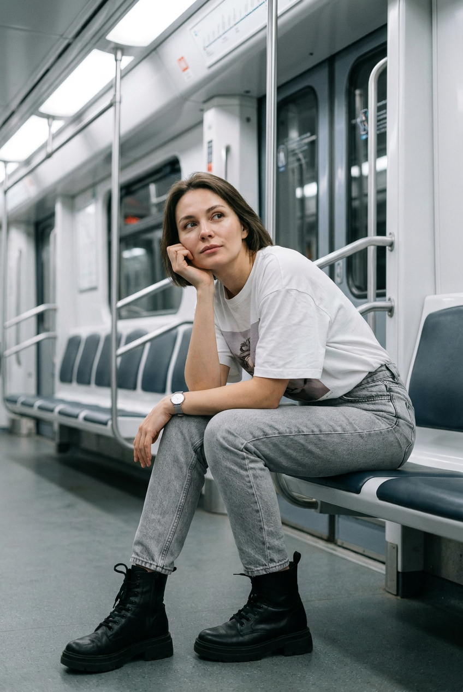
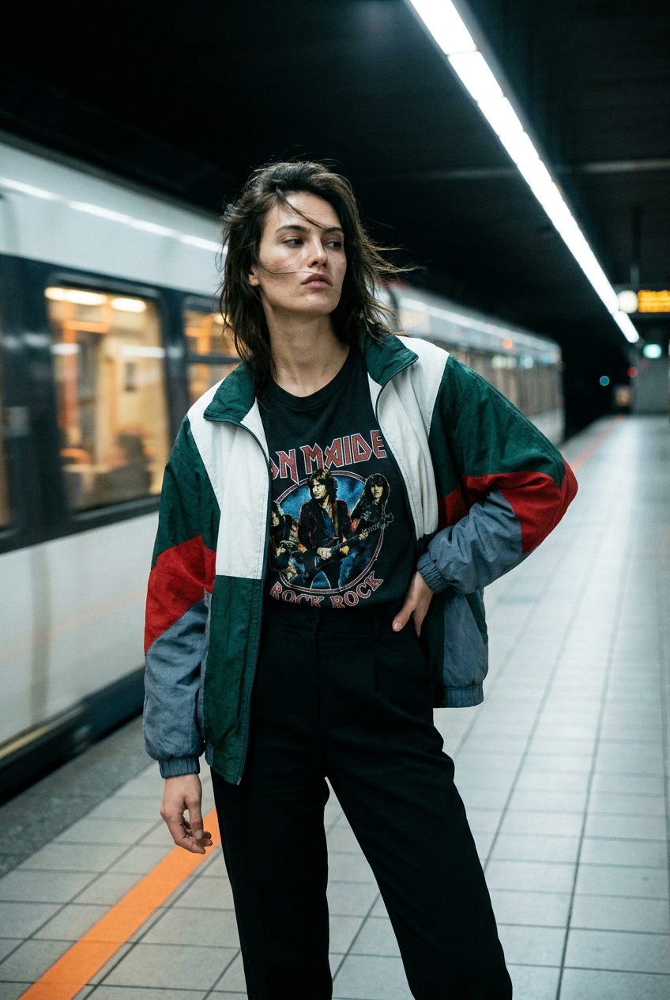
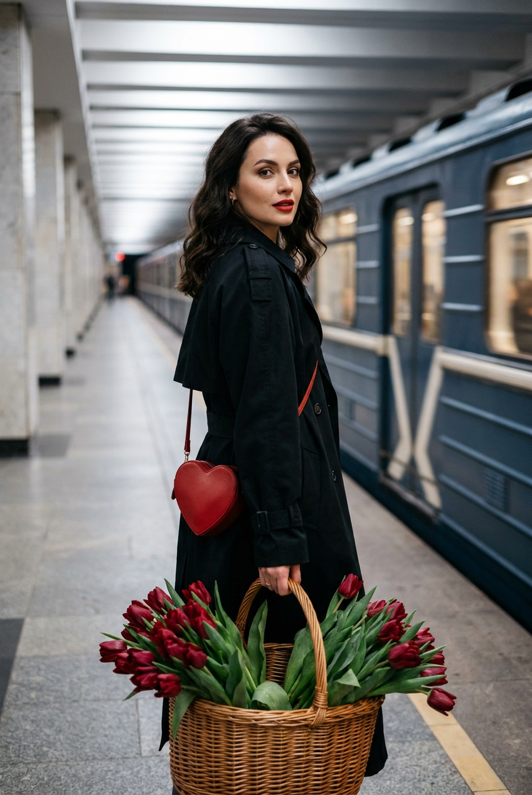
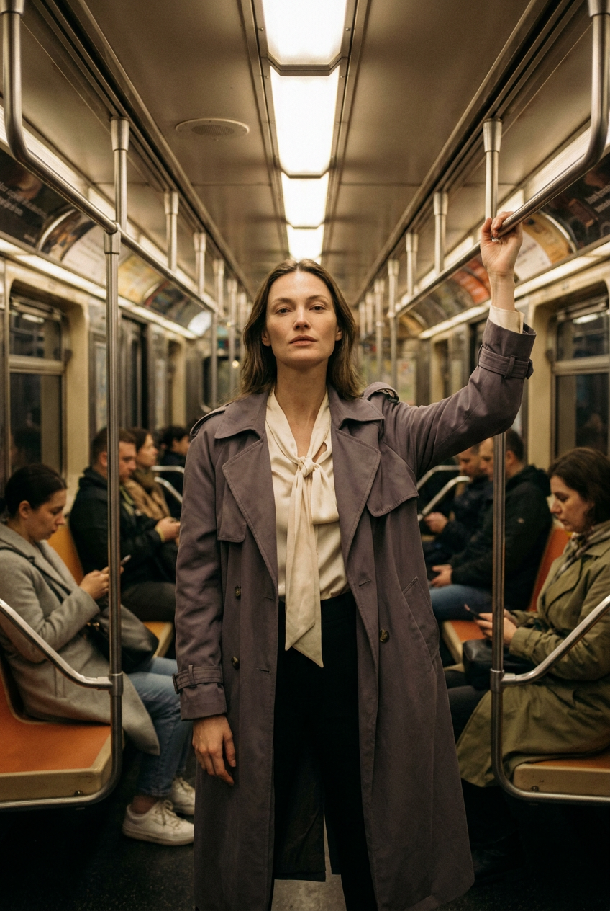
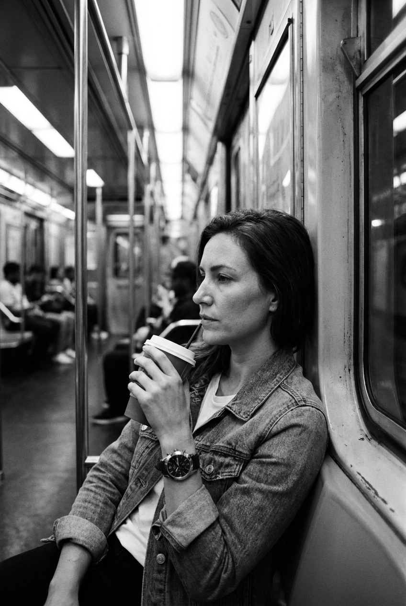
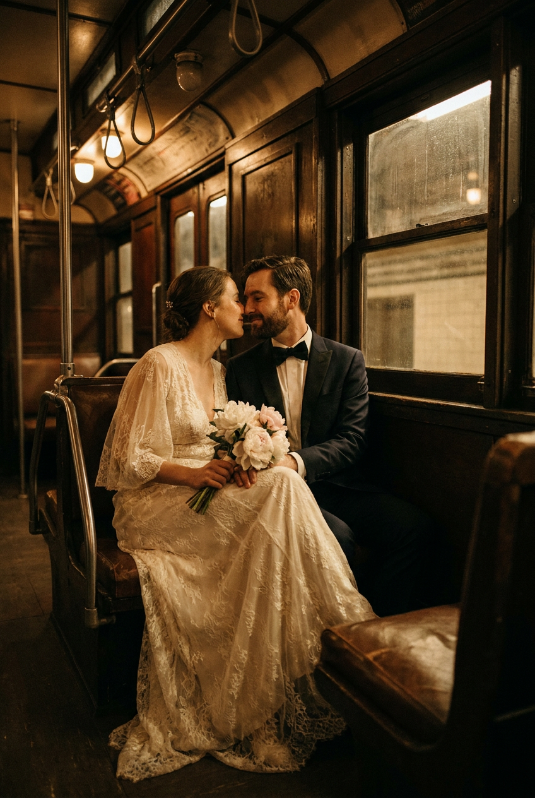
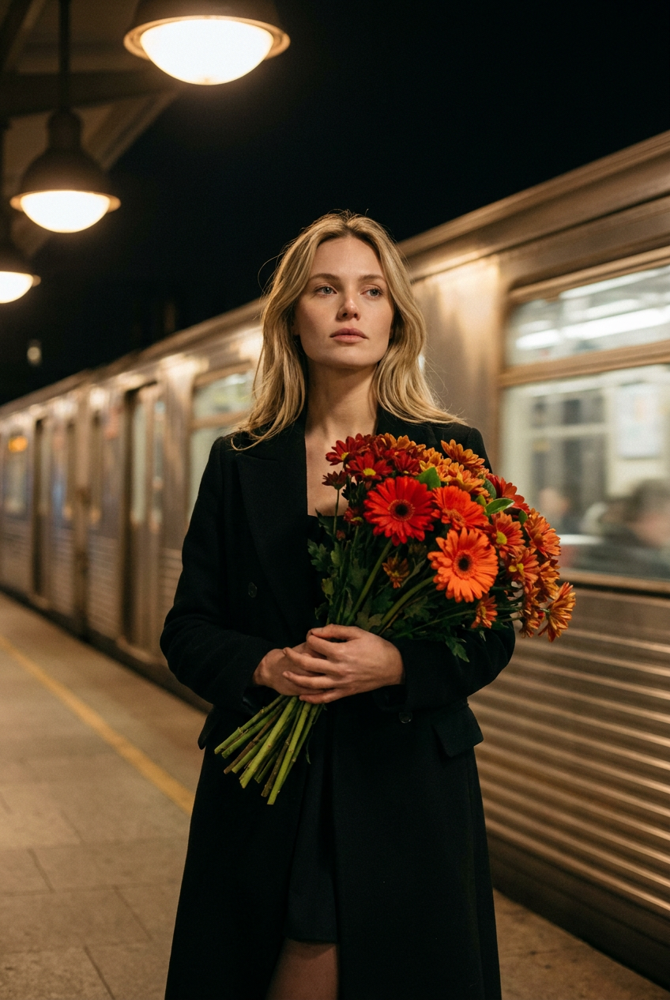
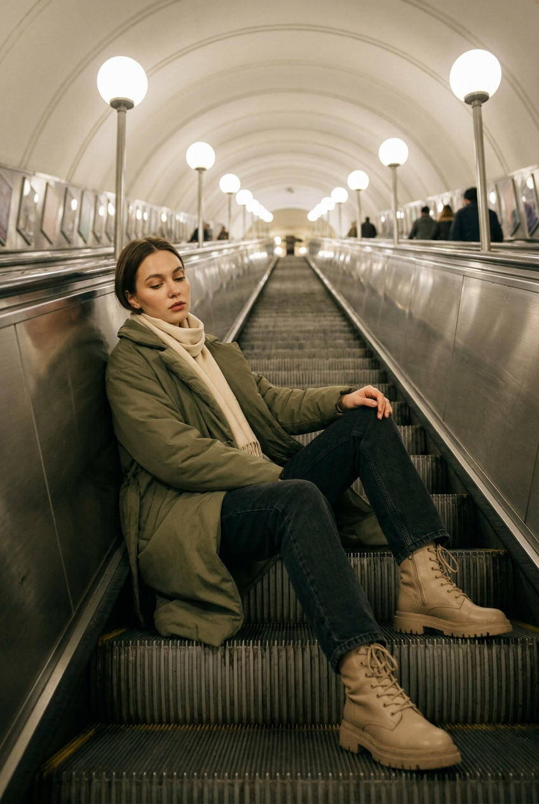
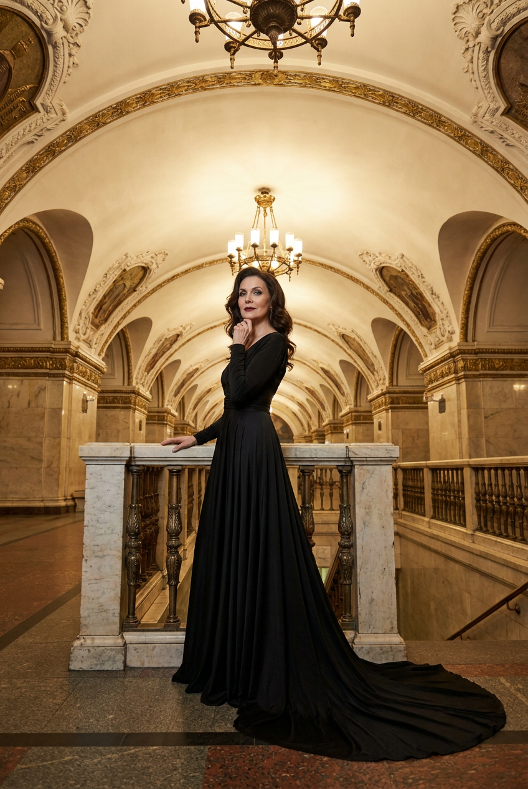
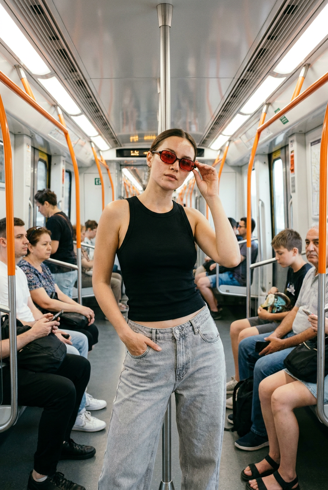

ИИ-фото в метро: 10 промптов для нейросети

Обычный портрет быстро надоедает: нейросеть может сохранить лицо, но часто теряет атмосферу, позу и детали одежды. Готовые промпты помогают собрать кадр с нужным светом, настроением и сценой в метро.
В подборке — десять сценариев: от задумчивого портрета в вагоне и снимка у движущегося поезда до свадебной истории, роскошной станции, эскалатора и дерзкого street-style. Подставьте свой референс и меняйте цвета под себя.
Как сгенерировать такое фото: пошагово
Нужен снимок анфас при ровном свете, лицо в кадре целиком, без тёмных очков и головных уборов. Разрешение от 1000 пикселей по короткой стороне. Чем чётче исходник, тем точнее модель повторит черты.
Выберите сценарий ниже и нажмите «Копировать» — текст уйдёт в буфер целиком, вместе с командой сохранения внешности. Эта команда стоит первой строкой и отвечает за то, чтобы на выходе было ваше лицо, а не случайное.
Кнопка «Сгенерировать» рядом с каждым промптом открывает модель в новой вкладке. Nano Banana Pro работает с референсом лица — в отличие от моделей, которые генерируют портрет с нуля и узнаваемость теряют.
Промпт — в поле ввода, портрет — через загрузку референса. Порядок значения не имеет, но без референса команда сохранения внешности работать не будет: модели нечего сохранять.
Для сторис и ленты берите 9:16, для превью и обложек — 4:3. Первый результат редко идеален: если поза или свет ушли не туда, поправьте соответствующую часть промпта и запустите заново. Обычно хватает двух-трёх итераций.
10 промптов для генерации
1. Задумчивый портрет в вагоне
Строго сохранить внешность по загруженному референсу: черты лица, пропорции, мимику и текстуру кожи без изменений. Фотореалистичный candid fashion-кадр внутри современного вагона метро. Женщина сидит на длинном сиденье в расслабленной задумчивой позе: корпус чуть подан вперёд, одна нога согнута, вторая вытянута, локоть лежит на колене, ладонь поддерживает щёку или подбородок. Она смотрит немного в сторону и вверх; настроение спокойное, мягкое, слегка меланхоличное, но уверенное. На ней свободная белая хлопковая футболка с минималистичным графическим или фотопринтом без читаемых слов, естественные складки и лёгкий oversize. Внизу видна линия светло-серых или серо-голубых джинсов с плотной фактурой денима. Мягкий свет вагона, реалистичные отражения в окне, натуральная кожа, документальная композиция, высокая детализация, объектив 50 мм, f/2.8, малая глубина резкости.
2. Динамика у проходящего поезда

Строго сохранить внешность по загруженному референсу: черты лица, пропорции, мимику и текстуру кожи без изменений. Фотореалистичная fashion-editorial сцена на платформе метро рядом с движущимся составом. Женщина стоит уверенно и расслабленно, корпус немного развёрнут в сторону, одна рука находится у бедра, другая свободно опущена, взгляд направлен мимо камеры. Поток воздуха от поезда подхватывает волосы, добавляя кадру скорость и спонтанность. На ней чёрная винтажная футболка с крупным рок-принтом в духе мерча 1970-х: портрет легендарного гитариста и ретро-графика, без искажённых букв. Сверху — объёмная спортивная ветровка или oversized jacket в белом, тёмно-зелёном, красном и серо-голубом цветах, слегка распахнутая. Размытый поезд создаёт горизонтальные следы движения, свет платформы контрастный, цветокоррекция журнальная, объектив 35 мм, f/2, короткая выдержка для резких волос и лица.
3. Корзина красных тюльпанов

Строго сохранить внешность по загруженному референсу: черты лица, пропорции, мимику и текстуру кожи без изменений. Сделай фотореалистичную editorial-фотографию на платформе метро рядом с проходящим поездом. Женщина стоит вполоборота, голова повернута к камере через плечо, взгляд спокойный, мягкий, уверенный и притягательный. В руках у неё большая светлая плетёная корзина, полностью наполненная свежими красными тюльпанами: плотные бутоны, глубокий насыщенный цвет, много зелёных листьев, детально прорисованные лепестки и стебли. На героине длинное чёрное пальто или строгий oversize-тренч из матовой ткани с чистыми минималистичными линиями. На заднем плане — поезд в движении, лёгкое размытие и воздушный поток. Свет кинематографичный, цветы остаются главным акцентом, фактуры ткани и лозы реалистичные, fashion-журнал, объектив 50 мм, f/2.8, высокая детализация, естественная кожа.
4. Сильная поза в вагоне

Строго сохранить внешность по загруженному референсу: черты лица, пропорции, мимику и текстуру кожи без изменений. Фотореалистичный fashion-editorial кадр в современном или слегка винтажном вагоне метро. Женщина стоит по центру прохода, корпус выпрямлен, одна рука поднята к металлическому поручню над головой, вторая свободно опущена у бедра. Поза выглядит расслабленной, но сильной, как на модной съёмке; выражение лица спокойное, холодноватое и уверенное, взгляд прямо в объектив или чуть ниже него. На ней длинное серое либо серо-фиолетовое пальто-тренч свободного кроя из плотной матовой ткани, распахнутое или приоткрытое. Под ним видна светлая блузка или базовый топ. Добавь симметрию вагона, поручни, сиденья и мягкие отражения в стекле, без лишних пассажиров. Нейтральный холодный свет, реалистичные складки, объектив 35 мм, f/2.8, вертикальный кадр 4:5, высокая резкость лица.
5. Чёрно-белая остановка

Строго сохранить внешность по загруженному референсу: черты лица, пропорции, мимику и текстуру кожи без изменений. Создай фотореалистичную чёрно-белую street-fashion фотографию внутри вагона метро. Женщина стоит у стены или слегка опирается на неё спиной и плечом, сохраняя расслабленную уверенную позу с лёгкой отстранённостью. Голова немного повернута в профиль, взгляд уходит вперёд или вниз, настроение спокойное, задумчивое, прохладное, с городской меланхолией. На ней светлая футболка или базовый топ под джинсовой курткой с заметными швами, карманами и фактурой денима. На запястье — крупные часы с круглым циферблатом и тёмным ремешком. В одной руке одноразовый стаканчик кофе без логотипа и читаемых надписей. Используй выразительный монохром, мягкий верхний свет, глубокие серые тона, лёгкое зерно плёнки, естественную мимику, объектив 50 мм, f/2, вертикальная композиция.
6. Свадебная история в метро

Строго сохранить внешность по загруженному референсу: черты лица, пропорции, мимику и текстуру кожи без изменений. Фотореалистичная романтическая fashion-editorial сцена в старом или слегка винтажном вагоне метро. Рядом с женщиной стоит взрослый мужчина с лицом из референса; на нём чёрный смокинг или тёмный костюм, белая рубашка, аккуратная бабочка либо галстук, ухоженная борода или лёгкая щетина. Он смотрит на неё спокойно и нежно. Женщина одета в длинное кремовое, молочное или айвори-платье из лёгкой струящейся ткани: мягкие складки, полупрозрачные слои, свободные длинные рукава, элегантный свадебный силуэт. Макияж натуральный, но выразительный: ровная кожа, мягкий контур, акцент на глаза, естественные губы. Между героями — тихая близость, без театральных жестов. Тёплый свет вагона, деликатные отражения, объектив 50 мм, f/2.8, малая глубина резкости, высокая детализация ткани.
7. Цветы перед ночным поездом

Строго сохранить внешность по загруженному референсу: черты лица, пропорции, мимику и текстуру кожи без изменений. Сгенерируй атмосферную кинематографичную fashion-editorial фотографию на платформе метро перед движущимся поездом. Девушка стоит строго по центру кадра, корпус направлен прямо, голова слегка поднята, взгляд спокойный, уверенный и немного отстранённый. В руках она держит большой пышный букет ярко-красных и оранжевых цветов — гербер, хризантем или похожих сортов. Цветы должны выглядеть свежими, объёмными и живыми, руки аккуратно удерживают букет. На заднем плане поезд размыт в движении, видны световые полосы, ощущаются скорость, ночной город и сквозняк; волосы получают лишь лёгкое естественное движение. Сохрани исходные цвет, длину, пробор и укладку волос. Кадр мрачный, стильный, романтичный, слегка меланхоличный, с контрастным искусственным светом, объектив 35 мм, f/1.8, кинематографичная цветокоррекция.
8. Портрет на эскалаторе

Строго сохранить внешность по загруженному референсу: черты лица, пропорции, мимику и текстуру кожи без изменений. Фотореалистичная fashion-editorial фотография на эскалаторе роскошной или очень стильной станции метро. Женщина сидит на ступенях, слегка откинув корпус к боковой металлической панели; ноги согнуты и разведены в естественной fashion-позе, одна рука лежит на колене, другая расслабленно опущена. Взгляд мягкий и задумчивый, направлен вниз или в сторону, настроение спокойное, уверенное, немного мечтательное. На ней длинное зелёное или оливковое пальто свободного oversized-кроя из матовой ткани, распахнутое поверх светлого кремового, бежевого или песочного шарфа, который мягко обёрнут вокруг шеи и свободно свисает. Покажи металл, ступени, архитектурный свет и дорогие материалы станции. Реалистичные тени, естественная кожа, объектив 35 мм, f/2.8, вертикальный кадр 4:5, высокая детализация.
9. Платье на исторической станции

Строго сохранить внешность по загруженному референсу: черты лица, пропорции, мимику и текстуру кожи без изменений. Создай luxury fashion-editorial фотографию на роскошной исторической станции метро. Взрослая женщина стоит возле декоративной каменной и металлической балюстрады на платформе, корпус слегка развёрнут к камере. Одна рука мягко лежит на перилах, другая касается шеи или подбородка; поза статная, изящная, уверенная и немного театральная. На ней длинное чёрное вечернее платье в пол: приталенная талия, вытянутый силуэт, длинный шлейф по полу, открытая спина или глубокий вырез без вульгарности, уровень haute couture. Макияж выразительный, но благородный: безупречный тон, аккуратно подчёркнутые глаза, скульптурные, но мягкие черты. Используй мрамор, металл, орнаменты станции и тёплые лампы в фоне. Дорогая журнальная подача, объектив 85 мм, f/2, вертикальная композиция, высокая детализация.
10. Красные очки в вагоне

Строго сохранить внешность по загруженному референсу: черты лица, пропорции, мимику и текстуру кожи без изменений. Фотореалистичная fashion street-style фотография внутри современного вагона метро. Женщина стоит в проходе, корпус слегка развёрнут к камере, поза расслабленная, уверенная и чуть дерзкая. Одна рука находится в кармане джинсов, другой она легко касается красных очков у лица; взгляд спокойный, направлен прямо в объектив или немного в сторону. На ней чёрный облегающий топ без рукавов или чёрная майка-рибана, подчёркивающая фигуру, и светло-серые высокие джинсы свободного либо прямого кроя. Деним плотный, с естественными заломами, швами и реалистичной фактурой. Очки имеют красные полупрозрачные линзы и тонкую металлическую оправу. Добавь чистые линии вагона, поручни, сиденья и мягкие отражения в окнах. Нейтральный городской свет, объектив 50 мм, f/2.8, вертикальный кадр, натуральная кожа и высокая детализация.
Что важно учесть в этом стиле
Метро работает как контраст к модному образу: холодный металл, пластик и резкий свет подчёркивают ткань пальто, цветы или необычные аксессуары. Чем сложнее наряд, тем спокойнее лучше оставить позу и фон.
Для движения поезда задавайте конкретный эффект: горизонтальное размытие состава, развевающиеся волосы, световые полосы и резкость на лице. Для спокойного портрета подойдут объектив 50–85 мм, открытая диафрагма f/2–f/2.8 и малая глубина резкости.
Идеи для вариаций
- Замените дневной свет платформы на зелёные, янтарные или красные лампы.
- Перенесите сцену в пустой вагон поздней ночью или на станцию с мраморными колоннами.
- Добавьте прозрачный зонт, виниловую сумку, старый билет или букет сухоцветов.
- Попросите нейросеть снять кадр сверху на эскалаторе или через отражение в окне.
- Попробуйте плёночную зернистость, чёрно-белую обработку или вспышку в духе backstage.
Как собрать свой промпт
Сначала задайте формат кадра и место: вагон, платформа, эскалатор или историческая станция. Затем опишите позу, направление взгляда и эмоцию. После этого добавьте одежду по слоям — от верхней вещи до обуви и аксессуаров.
В финале укажите свет, фон, степень размытия, объектив и соотношение сторон. Для референса отдельно пропишите, какие черты нельзя менять. Если лицо или руки получились неточно, меняйте по одному параметру и делайте 3–5 повторных генераций, а не переписывайте весь текст.
Ошибки, из-за которых кадр не получается
- Слишком много действий. Когда героиня одновременно идёт, поправляет волосы, держит цветы и смотрит в окно, модель путает руки и направление взгляда.
- Нечёткая одежда. Указывайте материал, посадку, длину и положение верхнего слоя, иначе пальто может превратиться в платье.
- Текст на принте. Надписи часто превращаются в набор символов, поэтому лучше просить графику без читаемых слов.
- Не задан источник движения. Уточняйте, что размывается поезд, а лицо, руки и цветы остаются резкими.
- Слишком сильная стилизация. Слова «идеальная кожа» и «глянцевый эффект» могут убрать естественную мимику и текстуру лица.
Частые вопросы
Как сделать такое ИИ-фото бесплатно?
Попробуйте Kandinsky и Шедеврум: они подходят для генерации по тексту, но точность лица по референсу и количество доступных попыток могут меняться. В Krea AI и Arena.ai обычно удобнее тестировать визуальные варианты и загружать исходное изображение, однако бесплатный режим может ограничивать разрешение, скорость или число генераций. Ни один сервис не гарантирует идеальное совпадение лица, поэтому закладывайте несколько попыток и при необходимости делайте финальный апскейл.
Как сохранить лицо с референса?
Загрузите чёткий портрет без сильных фильтров, где хорошо видны глаза, нос, губы и контур лица. В промпте укажите, что сохраняются индивидуальные черты, тон кожи и естественная мимика, а одежда, поза и фон меняются. Лучше использовать один основной референс и не перегружать запрос противоречивыми описаниями.
Почему поезд выглядит странно?
Модель может путать вагоны, платформу и направление движения, особенно если в сцене много поручней и пассажиров. Уточните, что поезд находится на заднем плане и размыт горизонтально, а героиня стоит на безопасном расстоянии за линией платформы. Для сложных сцен начните с пустого фона, затем добавьте движение и световые эффекты.
Как получить реалистичные руки и цветы?
Сократите число жестов: одна рука держит букет, вторая остаётся свободной или лежит на одежде. Опишите количество рук, положение пальцев и материал стеблей. Для цветов задайте вид, цвет, свежесть, форму бутонов и направление листьев. Если результат всё равно искажён, сгенерируйте кадр без букета, а затем добавьте его на этапе редактирования.